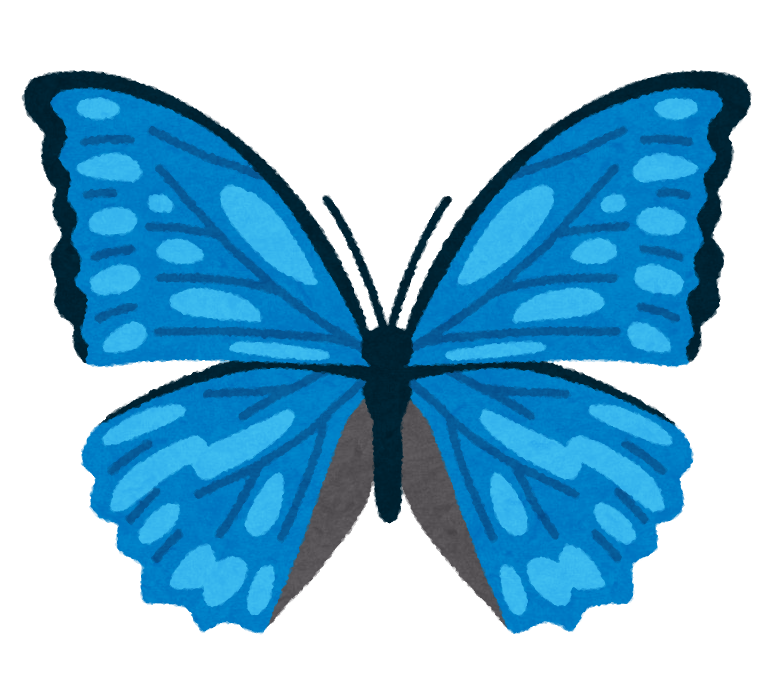

Web Retreat
寝室
執務室
当主
年表
応接間
書斎
文学
新聞
雑誌
畵廊
玄関
馬車
Updates
← リスト
戻る
読み込み中...
Done
PLAYLIST
×
Loading...
▶
−
♬
いろんな
所
を
旅してから
DAYS
🐰
ツカマエタ！
👆
👈
👇
👉
🔄 New Round
❓
探し物
×
0 / 0 番目の獲物
タグ
メッセージ
本日のカード
Card Name
メッセージ
本日のご予定
読み込み中...